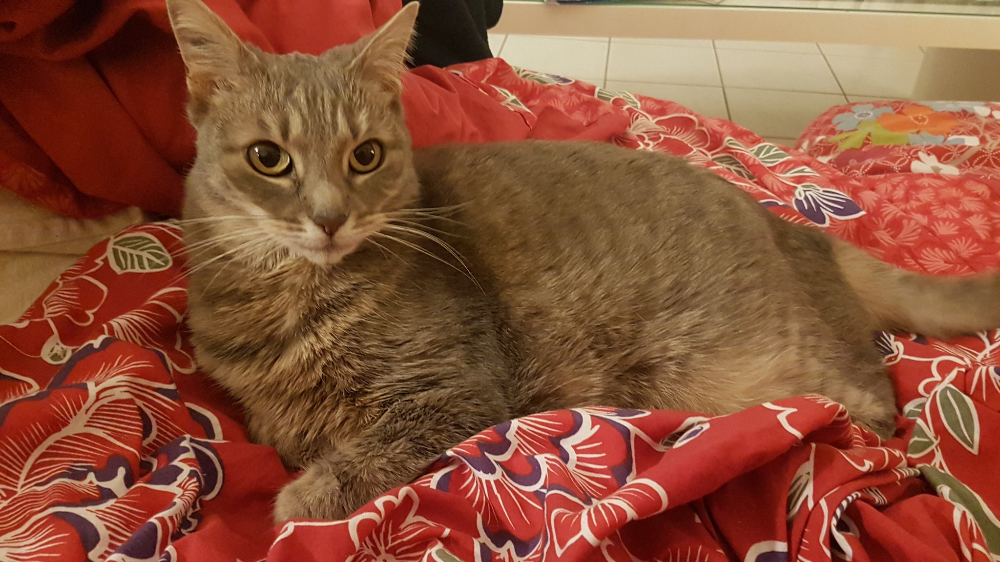
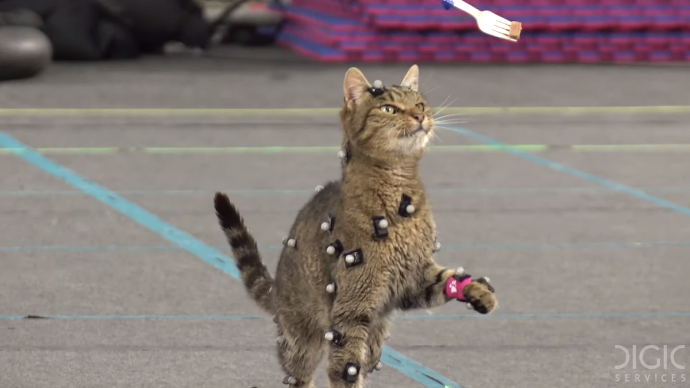

Trailer (klik op het Stray logo)
download-page (klik op het B-12 logo)
Heb je wel eens een kat in mo-cap gear gezien? De bewegingen van de kat uit stray zijn erg realistisch. Dit komt omdat de animatie is afgeleid uit de bewegingen van een echte kat. door hem met met speeltjes door een parcour heen te lokken hebben de developers alle animaties van het hoofdpersonage gecreeerd. Volgens de developers was het leuk, maar ongelofelijk moeizaam...
Het hoofdpersonage uit Stray heeft geen naam, maar zijn stemactrice wel! dit is Lala, en zij is de stemactrice achter alle geluidjes die de kat maakt in het spel. Er is in Stray een aparte knop zodat je de kat kan laten miauwen, zelfs tijdens cutscenes. De robots en zelfs de camera's reageren hier op. Op deze website zit er op beide pagina's ook zo'n knop, heb je er al op geklikt?
 